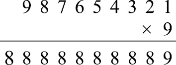

暖身趣味十题
你连11岁的孩子都不如吗？
（1）D
从这三幅图可以看出，立方体上有6个字母，分别是：I、K、M、O、U、P。因为立方体有6个面，所以不会再有其他字母。从立方体的第一个视图可以看出，字母I和M分别与K有一条公共边。第二幅图告诉我们，字母O和U分别与K有一条公共边。与K有公共边的一共只有4个面。在第一幅图中，字母K位于立方体顶部，I右侧的相邻字母是M。根据第二幅图，我们可以推断出，当K位于立方体顶部时，O右侧的相邻字母是U。由此可见，围绕K顺时针方向的4个面依次是M、I、U、O。也就是说，M在U的正对面。
（2）D
撒谎9次之后，匹诺曹鼻子的长度是29×5厘米 = 512×5厘米= 25.6米，网球场的长度是23.8米，两者比较接近。然而，根据莱斯特大学跨学科研究中心2014年的一份报告，这个长度远不及匹诺曹的鼻子实际可达的最大长度。该中心估计，如果匹诺曹的木质脑袋质量为4.18千克，鼻子最初的长度为1英寸（2.54厘米），质量为6克，那么在匹诺曹撒谎13次后，它的鼻子才会断裂，此时鼻子的长度为208米。
（3）C
“eighteen”（18）有8个字母，不是8的倍数。
（4）D
艾米在本和克里斯的左侧，这三个人的排序是艾米、本、克里斯，或者艾米、克里斯、本。根据题意，我们只能知道这些信息，所以D肯定是正确的。其他表述都不一定成立，B有可能是正确的。
（5）E
要找出本题的答案，我们可以反复尝试，也可以找出其中的规则。因为笔尖不能离开纸，而且线条不能重复，所以在图形中有奇数条线经过同一点的情况最多出现两次，只有E满足这个条件。
（6）B
我希望你至少会背七七乘法表！这样一来，你肯定知道35可以被7整除，由此可见，350 000同样可以被7整除。同理，因为49可以被7整除，所以4 900肯定也可以被7整除。由于354 972 = 350 000 + 4 900 + 72，所以我们只需知道72除以7的余数，就可以得到本题的答案。因为7×10 = 70，所以72除以7的余数是2。
（7）C
这一家至少有两个男孩，因为如果只有一个男孩，他就没有兄弟，这与题意不符。同样，女孩也至少有两个，所以孩子总数至少是4。
（8）E
随便找张纸，列出下面这个有趣的乘法竖式，问题即可迎刃而解。

（9）A
我希望上面用的那张纸上还有一些空间。本题需要完成下列计算：p = 105 – 47 = 58；q = p – 31 = 58 – 31 = 27；r = 47 – q = 47 – 27 = 20；s = r – 13 = 20 – 13 = 7；t = 13 – 9 = 4；x = s – t = 7 – 4 = 3。
（10）A
如果不让大家使用除法，是不是显得我太小气了呢？20/11 = 1.818 181…，由此可以看出一共只有两个不同的数字。